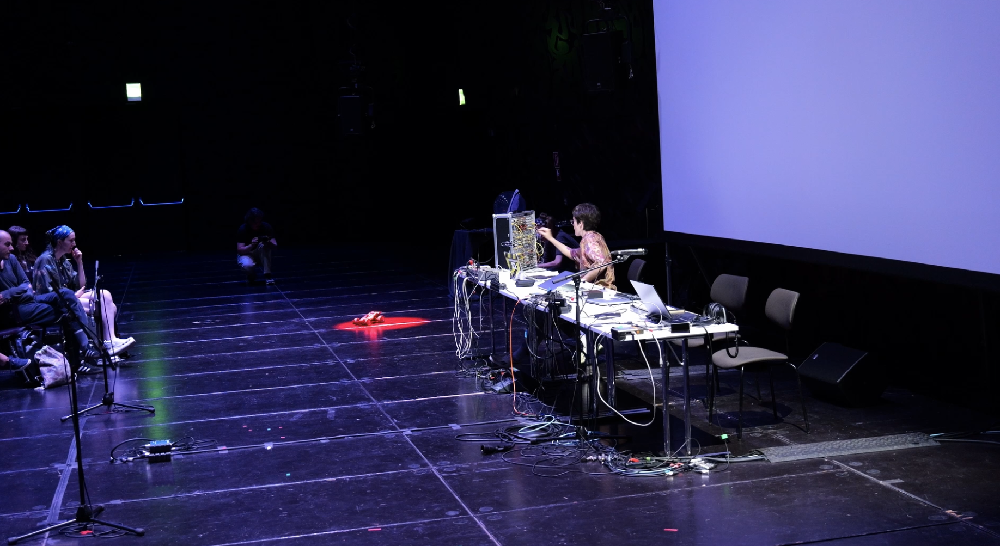
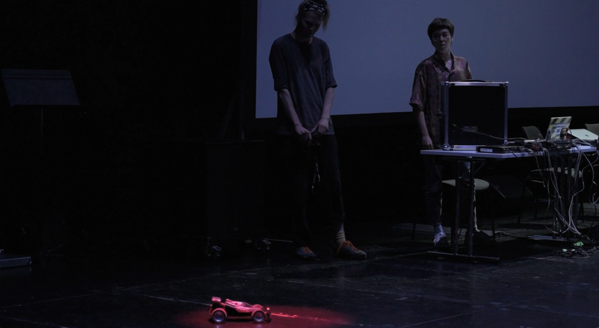
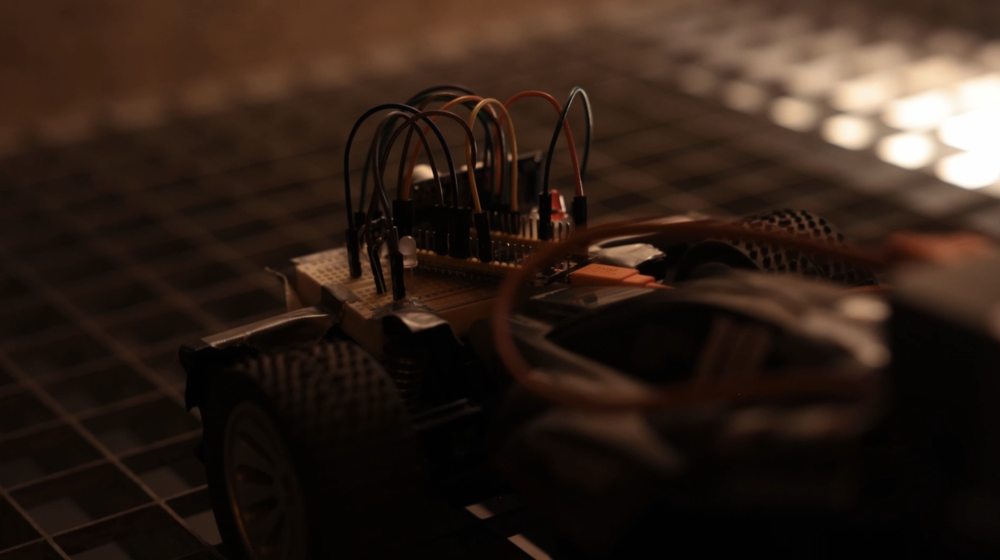
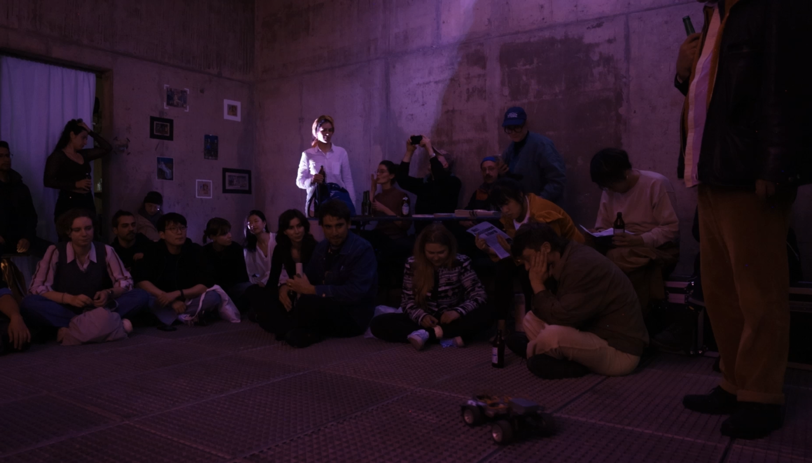

Stereotype Threat
is a series of interactive, performative explorations in which a toy becomes determinant for the outcome
of an artistic intervention. By shifting agency from the human body of the performer to a plaything,
the work inquires cultural assumptions around such objects: Who is a toy intended for?
How is a toy perceived?
The work originates from the observation that remote-controlled cars are predominantly marketed toward
young boys. The grey, robust, and industrial appearance of the toy reinforces these gendered associations,
situating the object within a specific cultural and aesthetic framework. By placing this toy at the center
of the performance, the work foregrounds how expectations and identities are projected onto objects
before they even begin to act.
In the first iteration (2024), the car functions as a mobile sound emitter carrying an embedded speaker
that navigates the audience while interacting with a network of microphones: as it approaches them,
acoustic feedback is triggered, creating a semi-unpredictable sonic environment. In the second iteration
(2025), the system expands into the electromagnetic domain, where the car operates as a mobile radio
instrument, capturing environmental signals (e.g. WiFi activity and remote control transmissions).
These signals are translated into sound processes and spatialised in real time, forming a feedback
loop between invisible infrastructures and audible output. Distance sensors allocated in the car
further allow audience proximity to directly shape the sonic behaviour.




Photos: Michele Bernabei, Benedikt Alphart, Johannes Felder ©